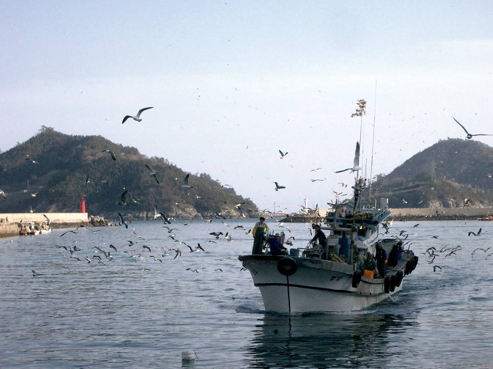

해남 혈도 간척지 400MW 국내 최대 태양광, 착공식 석 달 지나도 공사 흔적 없어…주민 160여 명 "매립면허 무효" 행정소송

주민 몫은 발전사업비 4%까지…해남 간척지 대형 태양광 11건 1,785MW, 군은 "연말까지 이익 환원 세부 지침"
전남 해남군 문내면과 황산면 사이 혈도 간척지에 들어설 국내 최대 400MW 태양광 단지를 두고 주민 160여 명이 농림축산식품부와 기후에너지환경부를 상대로 매립면허 무효와 발전사업 승인 취소를 구하는 행정소송을 냈다. 여의도만 한 479만㎡ 부지에서 지난 8월 7일 착공식이 열렸지만, 지난달 말까지 현장에는 공사를 시작한 흔적이 없었다. 주민들은 1960년대 외지인의 간척으로 바다를 잃은 데 이어, 빌려 짓던 간척지 농사마저 태양광 사업 때문에 임대 계약이 끊겼다며 이익은 땅 주인과 사업자가 가져가고 주민은 피해만 본다고 주장한다. 일부 주민은 제방을 터 갯벌을 되살리는 '역간척'까지 제안했고, 사업자 측은 주민이 협동조합으로 참여하면 20년간 1,500억 원의 수익을 얻을 수 있다며 한국남동발전이 이달 자본금을 출자한 뒤 본공사에 들어갈 계획이라고 밝혔다. 해남군에 따르면 간척지에서 추진 중인 40MW 넘는 태양광은 혈도를 포함해 11건, 가동 중인 2곳까지 합치면 1,785MW에 이른다. 군은 이익 공유 조례를 만들었지만 권고에 그치고 주민 참여가 발전사업비의 4%까지로 묶여 있다며, 연말까지 개발 이익을 지역에 더 돌려주는 세부 지침을 만들겠다고 했다.
시민에너지 관점
간척지 한 곳에 400MW, 군 전체로 1,785MW가 몰리는데 주민 몫이 사업비의 4%에 묶여 있다면 갈등은 예고된 것이다. 덴마크는 2009년부터 2020년까지 육상풍력 사업 지분 20%를 주변 주민에게 먼저 내놓도록 했고, 신안 주민들은 햇빛·바람연금으로 1인당 연 수십만~200만 원대 배당을 받는다. 주민이 반대하는 것은 재생에너지가 아니라 땅과 바다를 내주고도 의사결정과 수익에서 밀려나는 구조다. 해남군의 세부 지침은 권고를 넘어 주민 지분 비율을 크게 올리고, 착공 전에 주민이 소유와 운영에 참여하는 협의를 의무로 담아야 한다.
출처: 중앙일보 2026-11-12 천권필 원문 보기
海南・血島干拓地の国内最大400MW太陽光、着工式から3カ月たっても工事の跡なし…住民160人余り「埋立免許は無効」と行政訴訟
住民の持ち分は発電事業費の4%まで…海南の干拓地の大型太陽光は11件1,785MW、郡は「年末までに利益還元の細部指針」
全羅南道海南郡の門内面と黄山面の間にある血島干拓地に計画された国内最大400MWの太陽光団地をめぐり、住民160人余りが農林畜産食品部と気候エネルギー環境部を相手取り、埋立免許の無効と発電事業承認の取り消しを求める行政訴訟を起こした。汝矣島ほどの479万㎡の敷地で8月7日に着工式が開かれたが、先月末の時点で現場に工事が始まった形跡はなかった。住民らは、1960年代に外部の人による干拓で海を失ったうえ、借りて耕してきた干拓地の農地も太陽光事業のために賃貸契約を打ち切られたとし、利益は地主と事業者が持っていき、住民は被害だけを受けると訴えている。一部の住民は堤防を開いて干潟を取り戻す「逆干拓」まで提案しており、事業者側は住民が協同組合で参加すれば20年間で1,500億ウォンの収益が得られるとして、韓国南東発電が今月出資した後に本工事に入る計画だと明らかにした。海南郡によると、干拓地で進む40MW超の太陽光は血島を含め11件、稼働中の2カ所を合わせると1,785MWに達する。郡は利益共有条例を設けたものの勧告にとどまり、住民参加も発電事業費の4%までに限られているとして、年末までに開発利益を地域により多く還元する細部指針をつくるとしている。
市民エネルギーの視点
一つの干拓地に400MW、郡全体で1,785MWが集中するのに、住民の持ち分が事業費の4%に縛られていれば、対立は予告されたも同然だ。デンマークは2009年から2020年まで陸上風力事業の持ち分20%を周辺住民に優先して提供させ、韓国・新安の住民は「日差し・風年金」で1人当たり年数十万～200万ウォン台の配当を受けている。住民が反対しているのは再エネそのものではなく、土地と海を差し出しながら意思決定と収益から締め出される仕組みだ。海南郡の細部指針は勧告を超えて住民持ち分の比率を大きく引き上げ、着工前に住民が所有と運営に参加する協議を義務として盛り込むべきだ。
出典: 중앙일보 2026-11-12 천권필 原文を読む
韩国海南血岛围垦地400MW国内最大光伏项目，开工仪式三个月后仍无施工迹象…160余名居民提起行政诉讼要求"填海许可无效"
居民份额上限为发电项目费用的4%…海南围垦地大型光伏共11个、1,785MW，郡政府称"年底前出台利益返还细则"
围绕计划在韩国全罗南道海南郡门内面与黄山面之间的血岛围垦地建设的国内最大400MW光伏园区，160余名居民以农林畜产食品部和气候能源环境部为被告提起行政诉讼，要求确认填海许可无效并撤销发电项目批准。这块面积与汝矣岛相当、达479万平方米的用地于8月7日举行了开工仪式，但截至上月底现场仍不见施工迹象。居民们表示，上世纪60年代外地人围海造地让他们失去了大海，如今租来耕种的围垦农地又因光伏项目被解除租约，收益归地主和开发商，居民只承受损害。部分居民甚至提出拆开堤坝、恢复滩涂的"逆围垦"方案；开发方则称，居民若以合作社形式参与，20年可获得1,500亿韩元收益，并表示韩国南东发电将于本月出资后启动主体工程。据海南郡统计，围垦地上推进中的40MW以上光伏项目包括血岛在内共11个，加上已运行的2个，总装机达1,785MW。郡政府表示，虽已制定利益共享条例，但仅具建议性质，居民参与上限为发电项目费用的4%，将在年底前制定让开发收益更多回馈地方的细则。
市民能源视角
一片围垦地集中400MW、全郡集中1,785MW，而居民份额却被限制在项目费用的4%，冲突几乎是注定的。丹麦在2009年至2020年间要求陆上风电项目把20%的股份优先提供给周边居民，韩国新安郡居民则通过"阳光·风力年金"每人每年获得数十万至200万韩元级别的分红。居民反对的不是可再生能源本身，而是交出土地和大海却被排除在决策与收益之外的结构。海南郡的细则应超越建议性质，大幅提高居民持股比例，并把开工前居民参与所有和运营的协商定为义务。
来源: 중앙일보 2026-11-12 천권필 查看原文
Korea's Largest Planned Solar Park on Haenam's Hyeoldo Reclaimed Land Shows No Work Three Months After Groundbreaking, as 160 Residents Sue to Void Land Reclamation License
Residents can hold at most 4% of project costs; 11 large solar projects on Haenam reclaimed land total 1,785MW, and the county promises benefit-sharing guidelines by year-end
More than 160 residents have filed an administrative lawsuit against Korea's agriculture and climate ministries seeking to void the land reclamation license and cancel the generation permit for a planned 400MW solar park, the country's largest, on the Hyeoldo reclaimed land between Munnae and Hwangsan townships in Haenam County, South Jeolla Province. A groundbreaking ceremony was held on Aug. 7 on the 4.79 million-square-meter site, about the size of Seoul's Yeouido, but as of late last month there was no sign that work had begun. Residents say they lost the sea when outsiders reclaimed it in the 1960s and have now lost the farmland they rented on it because their leases were terminated for the solar project, arguing that landowners and developers will take the profits while residents bear the harm. Some have even proposed "reverse reclamation," breaching the seawall to restore the tidal flats, while the developer says residents could earn 150 billion won over 20 years by joining through a cooperative and that Korea South-East Power will start main construction after injecting capital this month. According to the county, 11 solar projects over 40MW, including Hyeoldo, are being pursued on reclaimed land, totaling 1,785MW with two plants already running. The county says its benefit-sharing ordinance is only advisory and resident participation is capped at 4% of project costs, and it plans to draw up detailed guidelines by year-end to return more development gains to the community.
Citizen Energy View
When 400MW is concentrated on one reclaimed site and 1,785MW across the county while residents' share is capped at 4% of project costs, conflict is all but guaranteed. Denmark required onshore wind projects to offer 20% of their shares to nearby residents first from 2009 to 2020, and residents of Korea's Sinan County receive dividends of several hundred thousand to around 2 million won a year each through solar and wind pensions. What residents oppose is not renewable energy but a structure that takes their land and sea while shutting them out of decisions and profits. Haenam's guidelines should go beyond recommendations, sharply raise the resident ownership share and make consultations on resident ownership and operation mandatory before construction.
Source: 중앙일보 2026-11-12 천권필 Read the original